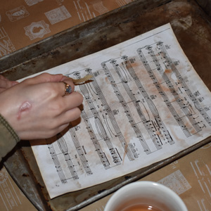
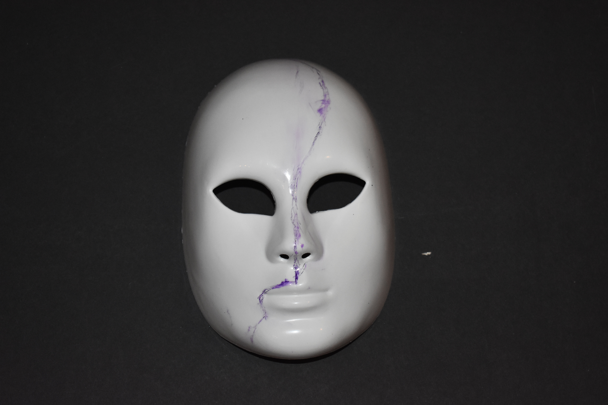
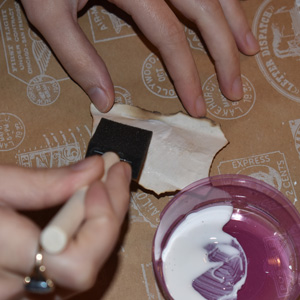
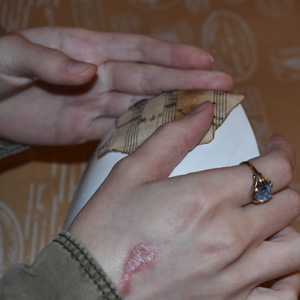
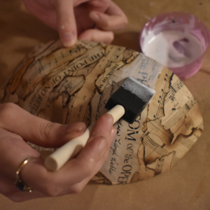

The mask of the month is based on the critical claimed musical Phantom of the Opera by Andrew Lloyd Webber. Phantom of the opera is set in 1870,Paris France. A man who is a musical genius lives and haunts opera house. He is know in the opera house as the Opera Ghost or O.G. He falls in love with a young ballerina in hopes that one day she that see the man behind the mask.
Materials
Mask
Tea bags
Saw
Phantom of opera sheet music (google search)
Print about 10 sheets of sheet music
Candle
Sponge brush
Pencil
Cookie sheet

Step I
Take the tea bags and place them into boiling water. Then take the sheet music and place it on the cookie sheet to prevent a mess. Take your tea bags out of the boiling water and squeeze them over the sheet music to give them an antique look. Then let the pieces of paper dry.

Step II
Take your pencil and draw on the mask from the center of the forehead and draw a straight line down till you reach the tip of the nose cut around the upper lip from the right side of the face of the mask. Refer to the picture above


Step III
Light the candle and have your mod podge ready with the sponge brush. Take your stained sheet music and rip it up into sections. Take the sections and burn the edges with the candle.Then apply the mod podge on the back of sheet music with the sponge brush.Then place it on the mask repeat till you cover the mask. You can overlap.Then place it on the mask repeat till you cover the mask.

Step VI
You can overlap.Lastly cover mask in mod podge and let it dry then your done.